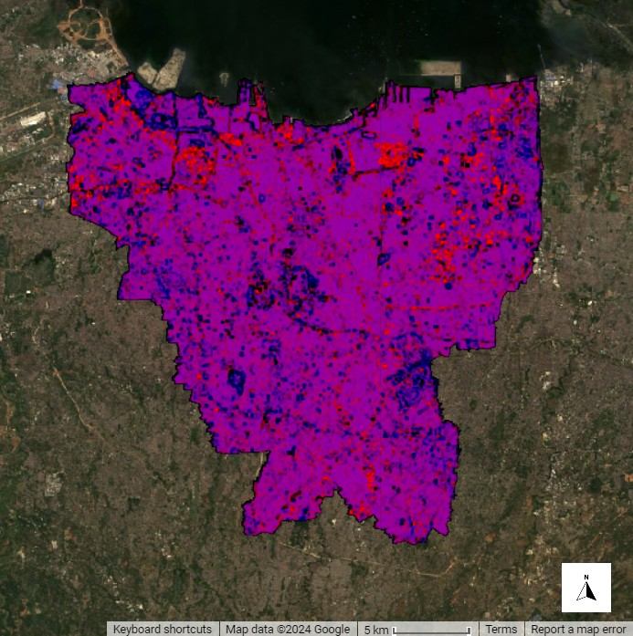
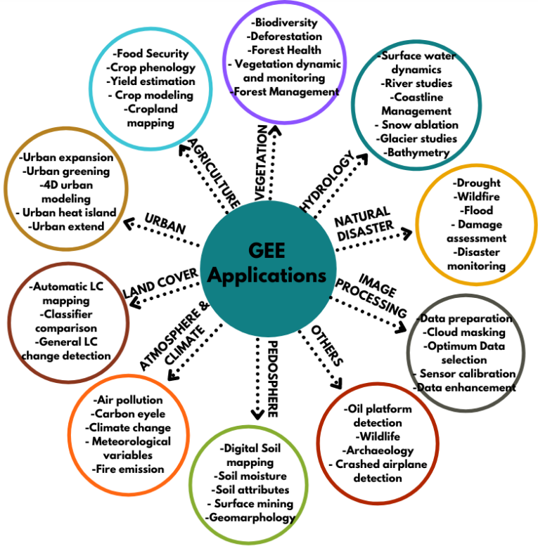
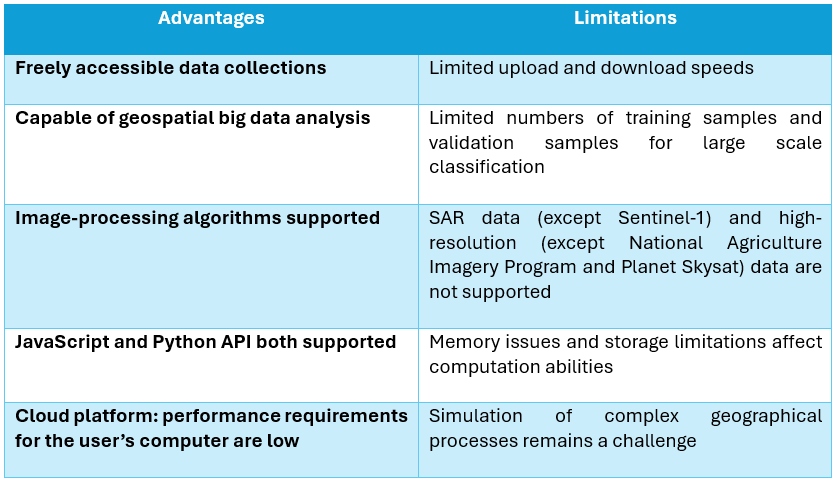

5 Google Earth Engine
output: format: html: toc: true toc-location: right toc-title: Contents html-math-method: katex css: styles.css bibliography: references.bib —
5.1 Summary
5.1.1 Key Words When Using GEE:
Object: Vector, raster, feature, string, number.
Image: Raster data type.
Image Collection: A set of images.
Geometry: Vector data type.
Feature: A geometry with attributes.
Reducer: An object used to compute statistics or perform aggregations.
Join: Used to combine datasets. (image or feature collection) based on time, location or an attribute.
Array: Object for multi-dimensional analysis.
Chart: An object for charting properties and spatiotemporal reductions.
After much anticipation, this week we were finally introduced to Google Earth Engine (GEE). GEE is a freely available “cloud-based geo-spatial analysis platform” which has become a very powerful and time efficient tool for analysing and understanding the earth’s surface. I think its effectiveness is reflected in the growing number of academic articles being published that use GEE, as shown below.

The lecture gave a quick overview into what may be different in GEE compared to other platforms, for example scale (pixel resolution) is determined by the output and not the input and rather nicely, you don’t have to worry about projections!
We then covered image reduction where we can reduce an image collection chosen by a place and dates, to the extreme values for each pixel (eg. min, max, mean, median, standard deviation). This results in an image collection being reduced to a single image.
Linear regression was also covered which in GEE, can be used for assessing change of pixel values over time to analyse features such as precipitation, land surface temperature and land use change. Finally, joins in GEE are similar to other GIS platforms and we can join feature collections and join image collections. We can also do spatial joins.
In the practical we also ran some enhancements and conducted some band math. I have included a PCA analysis of Jakarta below which actually loaded pretty quickly, I suppose demonstrating the power of GEE.

5.2 Applications
As I mentioned before, the use of GEE is now extensive among academics, NGOs, governments, and educational institutions as it’s easily accessible and more time efficient than other GIS applications used for remote sensing. Because of this and its functionality, GEE applications are far and wide. Below are a few popular applications of GEE:

A specific application I found was a study using GEE to detect palm oil plantations in Sumatra, Indonesia. It did this by combining optical and radar datasets (Landsat and SAR) and performing image classification using a Random Forest algorithm, finally assessing its accuracy by comparing it to other palm oil map sources (Sarzynski et al. 2020). The whole methodology was performed in Google Earth Engine which has a RandomForest function and several other functions that help to calculate accuracy assessment metrics. Similar to several other studies I looked at, the combination of optical and radar datasets can often improve the identification and classification of features, which I did not know one could do.
GEE also allows for the creation of applications, which I think can help share research to a wider audience as it is a user-friendly way to display insightful information. An example of this is Global Forest Watch which uses GEE to measure and display changes to the world’s forests. It’s now used by NGO’s, corporations, governments and even indigenous groups to protect and monitor the world’s forests.
Of course, GEE has it’s advantages and disadvantages which are summarised in the table below from (Zhao et al. 2021)

5.3 Reflection
After working with SNAP and R and seeing how long it takes to process remotely sensed data through these applications, I was excited to learn about how to use GEE. I think the difference in processing time for the enhancement measures such as PCA analysis really highlighted just how fast GEE is in comparison. Also, being able to load satellite images directly into GEE without having to go through a separate website is also really useful and time saving. It makes finding a suitable image a lot easier. The only issue for me at the moment is getting used to a new coding language, JavaScript, as I have not used it before.
Over the past weeks, I’ve become more interested in doing a dissertation that looks at the impact of natural hazards on the urban environment and I can see how I could use GEE to do so. I think the much shorter processing time of GEE makes that idea also look less daunting. I think the wide collection of datasets existing in one place would also be a big benefit when working on a big project such as the dissertation.